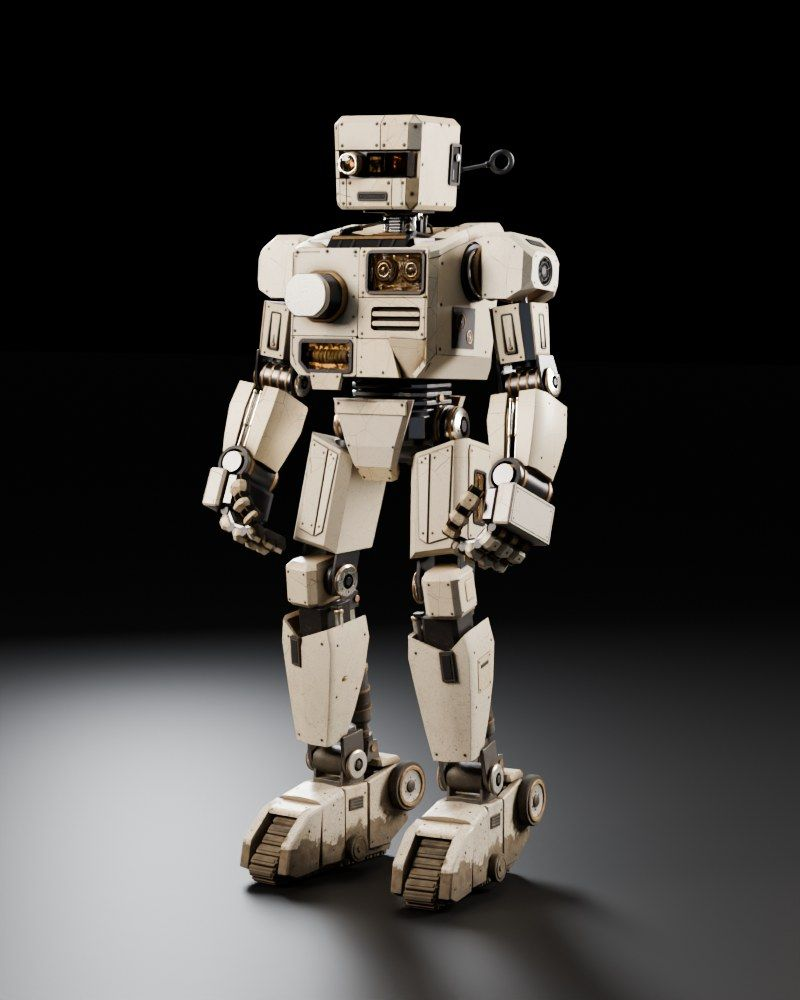

Session 1 · Week 1 · Monday
Boot Sequence
Install Rust, meet cargo, and write real programs with variables, types, functions and loops. By the end you'll have a robot that boots, counts down and tells you how much battery it has left.
Robbie's rust0% · factory shiny

Session materials
Presentation · 60 minSlides21 slides with runnable code. Arrow keys to move, N for the teacher's speaker notes.
Cheat sheetOne page, all of Session 1Every keyword, type and cargo command from today on a single screen. Keep it open during the homework.
Student HandbookBoot Sequence HandbookEverything from class written down, with memory tricks, gotchas, a cheat sheet and 10 practice questions.
Quiz 1 · 15 minBoot Sequence Quiz12 questions, pass mark 70%. Your best score is saved in this browser.
Build it
Lab 1 · in class · 45 minRobbie's GreetingA boot checklist, a countdown and a battery meter. Your first
cargo run that does something.
Homework 1 · due Session 2Units ConverterSix functions, 8 visible tests and a handful of hidden edge cases. Scored out of 10 by cargo test, clippy and rustfmt.